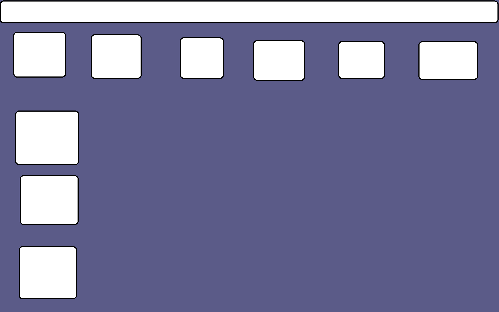
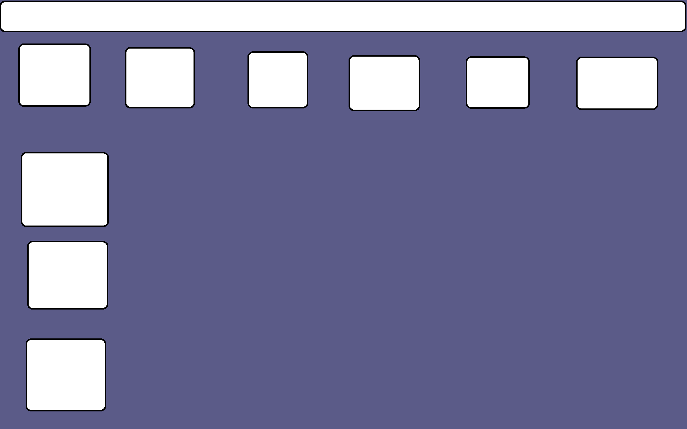

Mockups und Wireframes sind wichtige Werkzeuge in der Web- und Softwareentwicklung. Ein Wireframe ist eine einfache, schematische Darstellung einer Website oder Anwendung, die auf Struktur und Inhalt fokussiert. Es ist in der Regel farblos und ohne detaillierte Gestaltungselemente wie Bilder oder Schriftarten. Ein Mockup hingegen ist eine visuell detailliertere Darstellung, die bereits Designelemente wie Farben und Schriftarten enthält. Es zeigt, wie die endgültige Website oder Anwendung aussehen wird. Beide Werkzeuge sind nützlich, um das Designprozess zu strukturieren, um Feedback von anderen zu sammeln und um sicherzustellen, dass das Endprodukt den Anforderungen entspricht.
 
